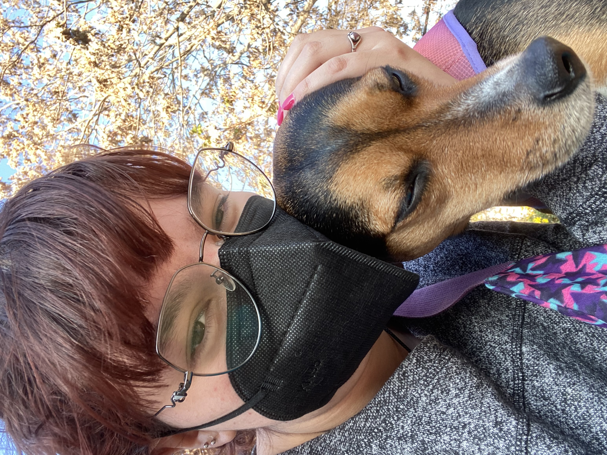
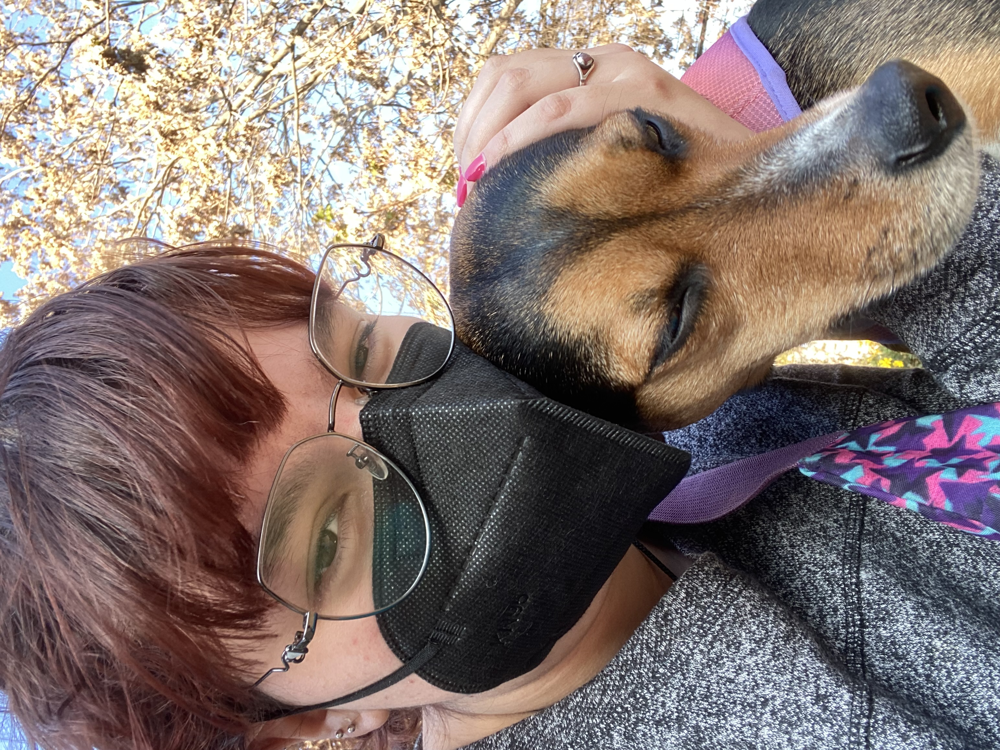

Hello, I am Isabel and I am an NMD student in Jönköping, Sweden. I am studying here because I got accepted and I like this major a lot :).
A little about me:
Want to take a look at my "work"? Click here
Hello, I am Isabel and I am an NMD student in Jönköping, Sweden. I am studying here because I got accepted and I like this major a lot :).
Want to take a look at my "work"? Click here